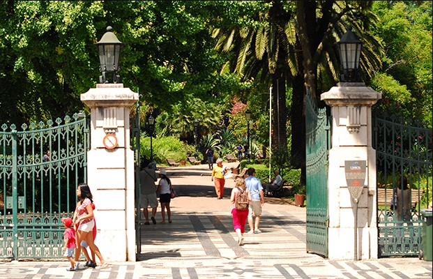

Jardim da Estrela
Jardim paisagístico ladeado de árvores com estufas repletas de plantas, cascatas e um parque infantil.
Com dois circuitos independentes. O primeiro é dedicado à Arte Oriental e Clássica, com peças de arte egípcia, greco-romana, arte islâmica, arte da China e arte do Japão. O outro circuito é dedicado à Arte Europeia, com peças cronologicamente situadas num período que se inicia no século XI e termina no século XX.